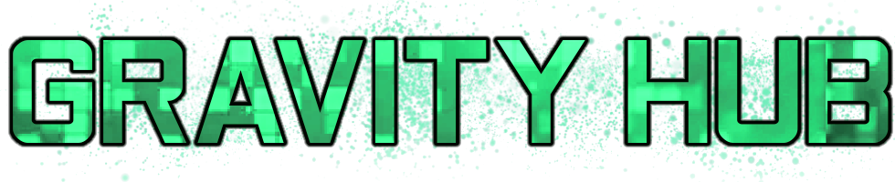
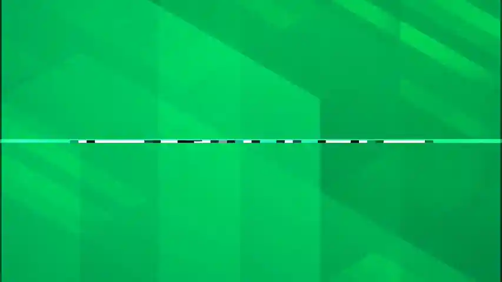
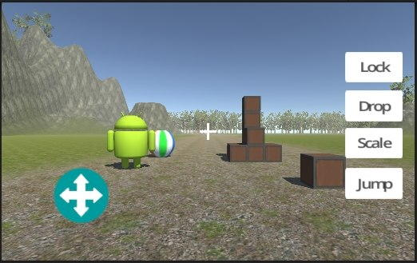
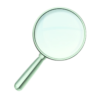
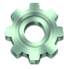
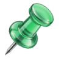
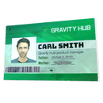
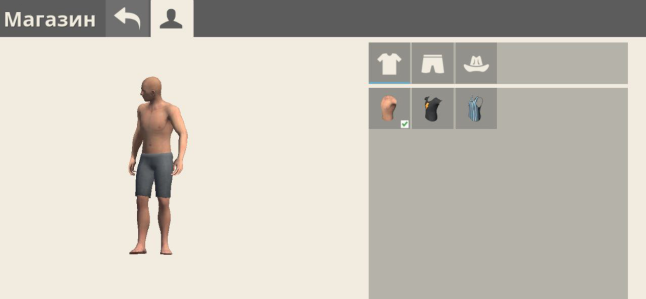
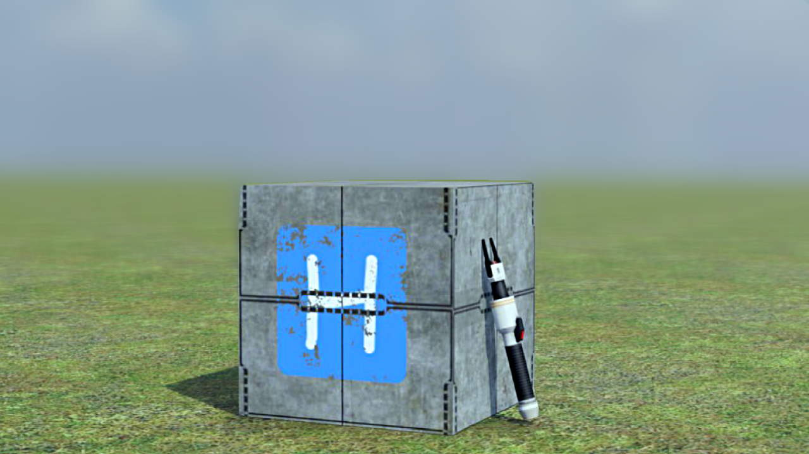

Жанр, проекты на основе которого существуют в гораздо большем количестве, чем можно найти при сёрфинге на скромных платформах вроде Google Play, считается универсальным и оригинальным. Например, во всем известномизначально сочетаются созидание, перестрелки и гонки, однако образ игры полностью зависит от игрока: по его желанию в понятие «песочница» получится дополнительно уместить головоломку, стратегию, ролевую игру или любой другой вид развлечения.
Отсюда можно установить, что жанр песочниц сочетает в себе свойства почти всех остальных, при этом оставаясь независимым и оригинальным. В то же время стиль одних таких проектов бывает весьма схожим с видом и функционалом других (ведь именно игроки TUB назвали упомянутый Hypper продолжением запылившейся со временем песочницы!). Исследование взаимно подобных песочниц подтолкнуло любительское сообщество к масштабным поискам и анализу ранее не известных многим проектов творческого жанра, и именно этот общий интерес позволил ꗈ 𝗚𝗿𝝰𝘃𝗶𝘁𝘆 𝗛𝞄𝗯 ꗈ обрести заслуженный статус крупного исслледовательского форума.

ꗈ 𝗚𝗿𝝰𝘃𝗶𝘁𝘆 𝗛𝞄𝗯 ꗈ не просто так назван «форумом», а не каким-нибудь «специализированным ресурсом». Впоследствии активной коммуникации с игроками и разработчиками самых разных проектов и сообществ, у нашего форума появилось гораздо больше целей, престижно достигаемых Детективами, коими называют каждого активного члена нашего уютного сообщества.
Наши задачи:

Находить песочницы, имена которых редко упоминались на каких-либо платформах.
Изучать уникальные особенности и нюансы существующих проектов этого жанра.
Расследовать связи между песочницами и познавать их корни.
Узнавать интересные факты о карьерах разработчиков физических песочниц, их личностях и занимательном прошлом.

В то же время состав ꗈ 𝗚𝗿𝝰𝘃𝗶𝘁𝘆 𝗛𝞄𝗯 ꗈ служит Детективам по-родному уютным коллективом. Помимо того, что на самом форуме со временем образовалась неповторимая атмосфера, Детективы делятся опытом и разделяют уют с другими сообществами.
Именно благодаря дружеской коммуникации с самыми разными творческими комьюнити ꗈ 𝗚𝗿𝝰𝘃𝗶𝘁𝘆 𝗛𝞄𝗯 ꗈ удовлетворяет интересы практически каждого участника. Здесь — разработчики, художники, механики разных песочниц и просто замечательные собеседники, чем и гордится как стафф проекта, так и любой другой активный участник.

Наши проекты:
- Здесь нам хорошо пригодился бы опытный пацак с мастерским владением анимацией ссылок! Только КЦ у нас нет, но жёлтые штаны в «Гордости сообщества» — обеспечим...